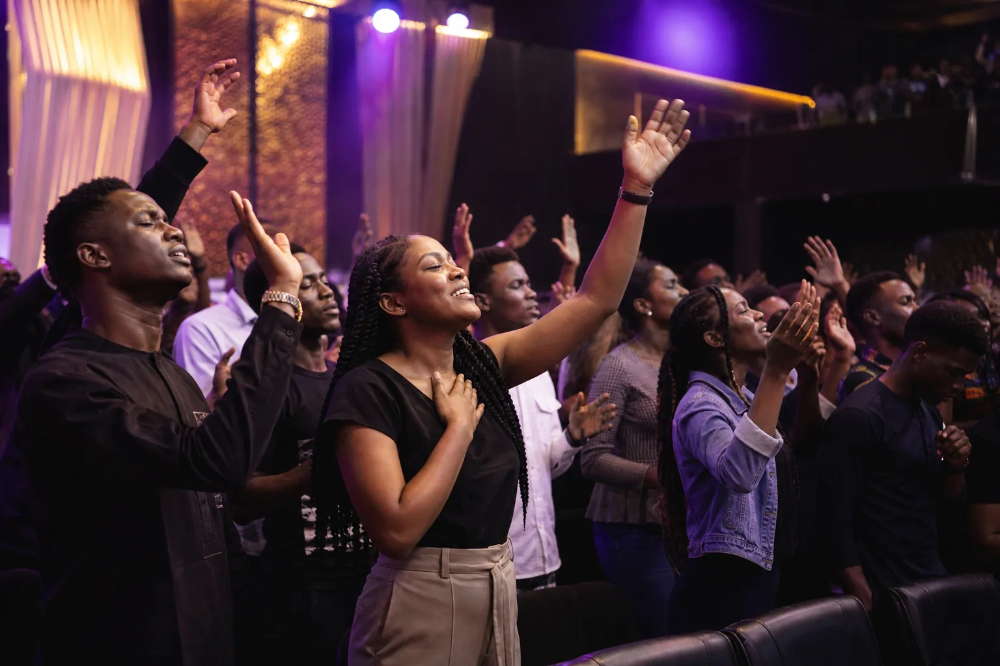

Walking in Dominion
Understanding your authority in Christ and living victoriously every day.
Sermon messages, worship moments, photo galleries, and testimonies.
Understanding your authority in Christ and living victoriously every day.

WorshipHighlights from our Youth Worship Team leading the congregation.
 Gallery
Gallery
Connecting, growing, and celebrating together in Port Harcourt.